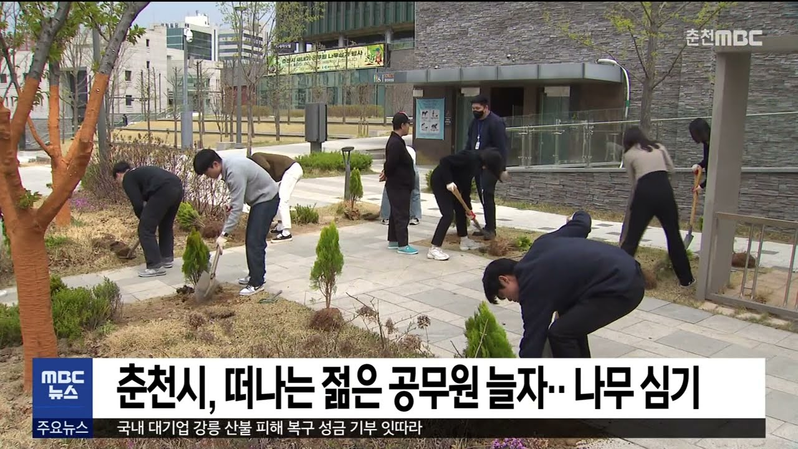

저렇게 해서 탈주해버리면
그 업무 옆사람이 다 처리해야하는데
감당할 수 있나?
그저 군대식 해결법으로
한참 일해야하는 바쁜 사람 불러다가 나무나 심게 하겠지

저렇게 해서 탈주해버리면
그 업무 옆사람이 다 처리해야하는데
감당할 수 있나?
그저 군대식 해결법으로
한참 일해야하는 바쁜 사람 불러다가 나무나 심게 하겠지

근데 미스터리임 구청이나 보건소가면 11시엔 밥먹으러 갔다하고 1시에 오니까 회의들어갔다하고 3시쯤에 얼굴 비치는 담당자들은 뭐임? 개꿀보직 걸린거임?
사바사 부바부
저러다가 오자마자 이거 준공 빨리 해야한다고 서명해달라해서 해줬더니 감사로 징계 때려맞는거 까지가 완성
애초에 들어오자마자 혹은 발령받자마자 알아야하는 법, 규정, 지침, 시스템 매뉴얼이 십수개인가부터 잘못됐음
심지어 전공이랑 아예 다른 업무 시키는 경우도 같이 일하는 공무원 보다보면 많던데 아찔하지
반년정도 개고생해서 조금 적응되고 일년쯤해서 할만해지면 반년뒤 다시 다른일하러 보내기
올해 13년차인데
처음 1년: 머지? 졸라어려운데? 짬밥으로 어찌저찌
다음 1년: 아 이제 알겠네 민원도 어케처리하는지 감잡음(중요한건 감만 잡았다는거)
그러고 다른부서 발령
반복
이글은 토목 건축직한정임 ㅋㅋㅋㅋ
꼬우면 행정직해
너 토목건축 to 딸리면 행정직이 간다는거 모르는구나
난 공무원문제 볼때마다 책임자선에 있는사람들이 놀고먹는게 문제같은데
이사람들 일할줄은 아는지 모르겠음
제대로 일하는 사람들은 갈려서 나가고, 일 안하는 병신들만 남아서 짬처리 존나 하니까 문제지.
1년 2년 버티면 년단위로 반복되는일이라 익숙해지긴할건데
일단 익숙해지면 크게 어렵진않은데
첫해 신규는 힘들긴하겠다.
이래놓고 2~3년 되면 타부서로
업무분장 시킴ㅋㅋㅋ
나 올해 1월달, 7월달, 10월달 자리바뀜
배우는데 토나올거같다
진짜 개판으로 돌아가네
자자 누칼협, AI 나와주세요
음.. .그냥 몰?루 해버리면 어케 됨?
철밥통이라매 @_@
비꼬는게 아니라 진짜 궁금해서 물어보는거....
너 군생활 그렇게 함?
해도됨. 열받은 민원인이 찾아와서 사무실을 다 뒤집어 엎어도, 모든 부서 사람들이 나를 병신 취급을 해도, 심심하면 윗사람이 욕받이 인형마냥 개지랄을 해도 웃으며 넘겨버리고 흔들리지 않는 무소의 뿔처럼 혼자서 가면 됨
그건 재능이 있는 사람만 할 수 있는거.
보통 사람들은 몰?루¿ 이거 쉽지 않음.
조직사회에서 내 역할과 입지와 시선이
있는데 폐급으로 그냥 버티면 되는 군대가
아님.. 이건 진짜 내 밥벌이임
??? : 고졸 수준의 단순반복 업무
해보면 대졸도 못하는일
그리고 이걸 2년마다 해야함. 2년마다 다른데로 발령내니까
신규 한명오자마자 탈주,
내 후임자 신입이라 아무것도모름
세사람 일하는데 진심 죽을거같다
공직보다야 덜 빡빡하겠지만 나도 서울시 계약지침을
준용해 쓰는 공기업 15년차라 저기 나온 말을
대부분 겪어봤는데,
배우는게 없는거 같지만 금방 배우게 될거고
지나보면 능숙해져있을거고 거기 있는 선배들처럼
일을 쳐내면서 많이 성장해있을거라고 확신함
서울시 계약지침만 준용해서 쓰니까 그렇지..
갑자기 너보고 영조물 하자보수 시키고 다음해에 교통과로 발령내면? 그 다음 해에는 건설과로 발령내면 성장 할수있을까.. 눈치는 늘겠다
조그만 회사일수록 창립초기 부터 모든일을 다해본 에이스가 있어. 문제생길때 마다 척척해결할 수 있는 경험치가 있는 선임이 있지
모르면 물어보고 사고쳐도 수습해주면서 나를 발전시켜줄 선배가 있을수 있어
근데 공직엔 없음 다들 2~3년마다 전범위로 돌리까
나는 지방직 복지공무원인데, 사람들이 복지라고 하면 읍면동사무소에서 대면하는 일이 힘들거라고 생각하는데 아님.
구군청 내에서 행정업무 하는게 훨씬 빡셈.(대도시 기준)
복지쪽이 나날이 커가기만 하는데, 그에 비해 사람을 안줌. 복지쪽이 그래서 씹기피부서임. 진짜 개좃같이 쓸데없는 업무가 너무 많음.
현직인데 공무원 업무종류가 많지만 업무처리방식은 사실 원패턴임
1. 전임자가 어떻게 했는지 확인한다.
2. 지침/규정을 확인한다.
3. 알만한 사람한테 물어본다.
선배공무원들은 이런처리방식에 익숙하니까 빨리하는것일뿐이지 뭐 대단한 노하우가 있거나 한게아님
아직 이런업무처리 익숙하지 않아서 힘든거지 익숙해지면 순환근무라서 업무가 바뀌어도 할만함 물론 할만한거 뿐이지 순환근무가 ㅈ같은건 안변함ㅋㅋ